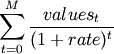

numpy.npv¶
- numpy.npv(rate, values)¶
Returns the NPV (Net Present Value) of a cash flow series.
Parameters : rate : scalar
The discount rate.
values : array_like, shape(M, )
The values of the time series of cash flows. The (fixed) time interval between cash flow “events” must be the same as that for which rate is given (i.e., if rate is per year, then precisely a year is understood to elapse between each cash flow event). By convention, investments or “deposits” are negative, income or “withdrawals” are positive; values must begin with the initial investment, thus values[0] will typically be negative.
Returns : out : float
The NPV of the input cash flow series values at the discount rate.
Notes
Returns the result of: [G50]

References
[G50] (1, 2) L. J. Gitman, “Principles of Managerial Finance, Brief,” 3rd ed., Addison-Wesley, 2003, pg. 346. Examples
>>> np.npv(0.281,[-100, 39, 59, 55, 20]) -0.0066187288356340801
(Compare with the Example given for numpy.lib.financial.irr)